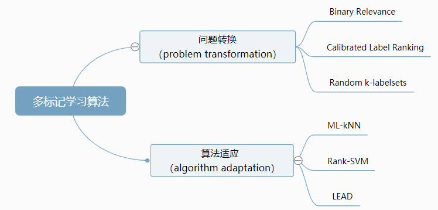

大数据研究实验室
MNNU Big Data Research Lab研究方向
|
多视图多标记学习
- 传统机器学习问题大多为单标记问题；比如数字识别，给计算机传入一张数字图像，程序会给你返回数字的预测，但它只会返回一个数字而不是多个，这就是单标记问题。
- 而如果给计算机一张街道的图像，要求判断图像中有哪些物体，这便是一个多标记问题。对于多标记学习的算法分类，可以用下面这张图来概括：

流环境知识发现
-
大数据时代，特征选择作为一种有效的数据预处理方式广泛应用于各个领域。在实际应用领域的许多具体问题中，存在很多无法预先获取整个特征空间，并且特征以流的方
式存在的场景。为此出现了面向特征流的在线流特征选择方法的研究。特征流是指特征数据以流的方式逐个或成组到达，且无法提前获知整个特征空间的信息。随着大数据
时代数据体量和维度的剧增，传统批处理模式的特征选择方法因不具有增量处理特性，使其在时空性能上已无法满足要求。相比传统特征选择，针对高维海量数据和特征空
间未知场景的在线特征选择具有更重要的研究和应用价值。
因果发现学习
-
该方向主要以数据中的因果关系为研究对象，发现数据中隐藏的因果关系，帮助构建更具可解释性和鲁棒性的预测模型。该方向是人工智能领域中的重点难题和前沿方向，
其最终目的是让计算机拥有反事实推导能力，进而步入强人工智能时代。涉及到的相关学科有因果推断、机器学习、人工智能和数据挖掘等。